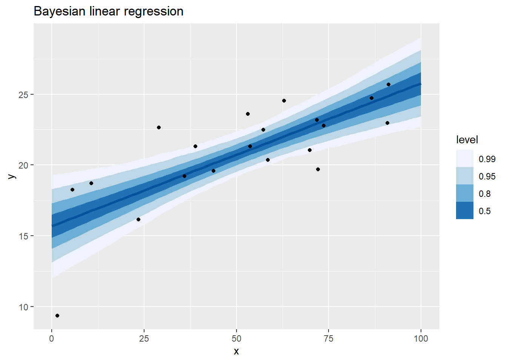
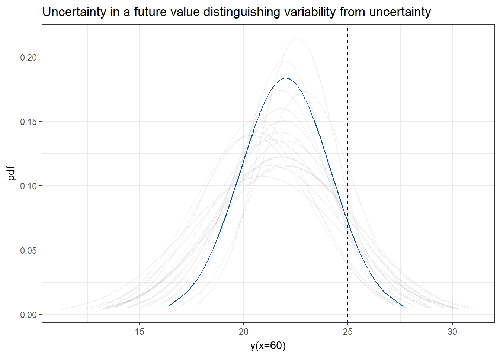

This is a demonstration of Quantitative uncertainty analysis in a Bayesian framework.
Generate an artificial data set for a continuous response variable.
Build and inform a linear model predicting the response given a single covariate.
Demonstrate different ways to use the posterior distribution of the parameters to evaluate the combined impact of parameter uncertainty on an outcome or quantity of interest.
Model
\[Y = a + b \cdot X + e\] \[ e \sim N(0,\sigma)\] # Monte Carlo simulation based on specified probability distributions
Let us start with a situation where we have uncertainty about parameters
n = 10^3 #number of iterations in the MC simulation
a <- rnorm(n,20,10)
b <- rnorm(n,4,0.5)
sigma <- abs(rnorm(n,3,10))
x <- 60
y <- unlist(lapply(1:n,function(i){a[i]+b[i]*(x-50)/50 + rnorm(1,0,sigma[i])}))
df_y <- data.frame(y = y, gr = y<25)
##plot prob density for Y
ggplot(df_y,aes(x = y,fill = stat(x < 25))) +
stat_halfeye() +
#stat_dotsinterval() +
geom_vline(xintercept = c(25), linetype = "dashed") +
scale_fill_manual(values = c("gray80", "skyblue")) +
ylab('pdf') +
xlab('y(x=60)') +
theme(legend.position='none')load("demodata.Rdata")
ggplot(df,aes(x=x,y=y))+
geom_point()# create a list with data to go into the Bayesian sampler
data_jags <- list(x=df$x, y=df$y, n=nrow(df))
mod_jags <- function(){
# Priors:
a ~ dnorm(0, 0.001) # intercept
b ~ dnorm(0, 0.001) # slope
sigma ~ dunif(0, 100) # standard deviation
tau <- 1 / (sigma * sigma) # sigma^2 doesn't work in JAGS
# Likelihood:
for (i in 1:n){
y[i] ~ dnorm(mu[i], tau) # tau is precision (1 / variance)
mu[i] <- a + b * (x[i]-50)/50
}
}# select initial values for the MCMC sampling
init_values <- function(){
list(a = rnorm(1), b = rnorm(1), sigma = abs(rnorm(1,10,2)))
}
# parameters to save
params <- c("a", "b", "sigma")
# run MCMC sampling using Gibbs sampling (may take some time, but not long)
mcmc_jags <- jags(data = data_jags, inits = init_values, parameters.to.save = params, model.file = mod_jags,
n.chains = 3, n.iter = 12000, n.burnin = 2000, n.thin = 10)## module glm loaded## Compiling model graph
## Resolving undeclared variables
## Allocating nodes
## Graph information:
## Observed stochastic nodes: 20
## Unobserved stochastic nodes: 3
## Total graph size: 131
##
## Initializing modelmod_mcmc <- as.mcmc(mcmc_jags)mcmc_jags## Inference for Bugs model at "C:/Users/ekol-usa/AppData/Local/Temp/Rtmp2tHHJp/model451c28bb19c3.txt", fit using jags,
## 3 chains, each with 12000 iterations (first 2000 discarded), n.thin = 10
## n.sims = 3000 iterations saved
## mu.vect sd.vect 2.5% 25% 50% 75% 97.5% Rhat n.eff
## a 20.725 0.594 19.533 20.342 20.722 21.106 21.882 1.003 1400
## b 5.033 1.095 2.904 4.320 5.036 5.736 7.234 1.001 3000
## sigma 2.617 0.490 1.865 2.276 2.542 2.889 3.742 1.002 1200
## deviance 93.552 2.813 90.370 91.484 92.820 94.870 100.755 1.004 890
##
## For each parameter, n.eff is a crude measure of effective sample size,
## and Rhat is the potential scale reduction factor (at convergence, Rhat=1).
##
## DIC info (using the rule, pD = var(deviance)/2)
## pD = 3.9 and DIC = 97.5
## DIC is an estimate of expected predictive error (lower deviance is better).#plot(mod_mcmc)Let us illustrate the model for values on x between 0 and 100.
# save posterior from three chains into one sample
mcmc_sample <- as.mcmc(rbind(mod_mcmc[[1]], mod_mcmc[[2]], mod_mcmc[[3]]))
# make predictions for different values on x
x_new = seq(0,100,by=1)pred_sample2 <- do.call('rbind',lapply(1:nrow(mcmc_sample),function(i){
data.frame(y=mcmc_sample[i,"a"] + (x_new-50)/50 * mcmc_sample[i,"b"],x=x_new,iter=i)
}))
ggplot(pred_sample2,aes(x=x,y=y)) +
stat_lineribbon(aes(y = y), .width = c(.99, .95, .8, .5), color = "#08519C") +
scale_fill_brewer() +
geom_point(data=df,aes(x=x,y=y)) +
ggtitle('Bayesian linear regression')
pred_sample3 <- do.call('rbind',lapply(1:nrow(mcmc_sample),function(i){
data.frame(y=mcmc_sample[i,"a"] + (x_new-50)/50 * mcmc_sample[i,"b"] + rnorm(length(x_new),0,mcmc_sample[i,"sigma"]),x=x_new,iter=i)
}))
ggplot(pred_sample3,aes(x=x,y=y)) +
stat_lineribbon(aes(y = y), .width = c(.99, .95, .8, .5), color = "#08519C") +
scale_fill_brewer() +
geom_point(data=df,aes(x=x,y=y)) +
ggtitle('Bayesian linear regression')pred_sample_draws <- do.call('rbind',lapply(1:20,function(j){
i <- sample.int(nrow(mcmc_sample),1)
data.frame(y=mcmc_sample[i,"a"] + (x_new-50)/50 * mcmc_sample[i,"b"],x=x_new,draw=j)
}))
ggplot(pred_sample_draws,aes(x=x,y=y)) +
geom_line(aes(group = draw), color = "#08519C") +
geom_point(data = df) +
theme_bw() +
transition_states(draw, 0, 0.2) +
shadow_mark(past = TRUE, future = TRUE, alpha = 1/8, color = "gray50")Monte Carlo simulation can be used to evaluate the combined impact of parameter uncertainty on a prediction from the model.
Let us say we are interested in the value of y when x = 60.
Different ways to perform Monte Carlo simulation based on an MCMC sample from the posterior distribution of a Bayesian model
summarise on the marginal distributions (and fit distributions to it) and sample from these to run the MC simulation
plug in the MCMC sample into the MC simulation directly (useful to consider dependencies between parameters)
generate the quantity of interest inside the MCMC sampling
We want to characterise uncertainty in a potential future observation of y, which includes how data may vary around the model and uncertainty about the model.
## derive quantity of interest from the posterior sample
a <- mcmc_sample[,"a"]
b <- mcmc_sample[,"b"]
sigma <- mcmc_sample[,"sigma"]
x <- 60
y_mc <- unlist(lapply(1:nrow(mcmc_sample),function(i){
a[i]+b[i]*(x-50)/50 + rnorm(1,0,sigma[i])}))
df_y <- data.frame(y = y_mc, gr = y<25)
##plot prob density for Y
ggplot(df_y,aes(x = y,fill = stat(x < 25))) +
stat_halfeye() +
geom_vline(xintercept = c(25), linetype = "dashed") +
scale_fill_manual(values = c("gray80", "skyblue")) +
ylab('pdf') +
xlab('y(x=60)') +
theme(legend.position='none') +
ggtitle('Uncertainty in future data')Consider that we are interested in how variable y varies. If so, we can illustrate uncertainty about this variability by propagating uncertainty distinguishing variability from uncertainty. This is done using 2-dimenstional Monte Carlo simulation. The resulting graph is describing a 2-D distribution or a spaghetti plot.
## derive quantity of interest from the posterior sample
y_sample_draws <- do.call('rbind',lapply(1:20,function(j){
i <- sample.int(nrow(mcmc_sample),1)
x <- 60
pp <- ppoints(100)
qq <- qnorm(pp,mcmc_sample[i,"a"] + (x-50)/50 * mcmc_sample[i,"b"],mcmc_sample[i,"sigma"])
data.frame(pdf=dnorm(qq,mcmc_sample[i,"a"] + (x-50)/50 * mcmc_sample[i,"b"],mcmc_sample[i,"sigma"]),
q=qq,draw=j)
}))
ggplot(y_sample_draws,aes(x = q,y = pdf)) +
geom_line(aes(group = draw), color = "#08519C") +
geom_vline(xintercept = c(25), linetype = "dashed") +
ylab('pdf') +
xlab('y(x=60)') +
theme(legend.position='none') +
theme_bw() +
transition_states(draw, 0, 0.2) +
shadow_mark(past = TRUE, future = TRUE, alpha = 1/8, color = "gray50")+
ggtitle('Uncertainty in a future value distinguishing variability from uncertainty')
Model with squared term \[Y = a + b \cdot X + c \cdot X^2 + e\]
\[ e \sim N(0,\sigma)\]
mod_jags_sq <- function(){
# Priors:
a ~ dnorm(0, 0.001) # intercept
b ~ dnorm(0, 0.001) # linear term
c ~ dnorm(0, 0.001) # squared term
sigma ~ dunif(0, 100) # standard deviation
tau <- 1 / (sigma * sigma) # sigma^2 doesn't work in JAGS
# Likelihood:
for (i in 1:n){
y[i] ~ dnorm(mu[i], tau) # tau is precision (1 / variance)
mu[i] <- a + b * (x[i]-50)/50 + c * (x[i]-50)/50 * (x[i]-50)/50
}
}
# select initial values for the MCMC sampling
init_values_sq <- function(){
list(a = rnorm(1), b = rnorm(1), c = rnorm(1), sigma = abs(rnorm(1,10,2)))
}
# parameters to save
params_sq <- c("a", "b", "c", "sigma")
# run MCMC sampling using Gibbs sampling (may take some time, but not long)
mcmc_jags_sq <- jags(data = data_jags, inits = init_values_sq, parameters.to.save = params_sq, model.file = mod_jags_sq,
n.chains = 3, n.iter = 12000, n.burnin = 2000, n.thin = 10)## Compiling model graph
## Resolving undeclared variables
## Allocating nodes
## Graph information:
## Observed stochastic nodes: 20
## Unobserved stochastic nodes: 4
## Total graph size: 212
##
## Initializing modelmod_mcmc_sq <- as.mcmc(mcmc_jags_sq)
# study summary of output
mcmc_jags_sq## Inference for Bugs model at "C:/Users/ekol-usa/AppData/Local/Temp/Rtmp2tHHJp/model451c708642d3.txt", fit using jags,
## 3 chains, each with 12000 iterations (first 2000 discarded), n.thin = 10
## n.sims = 3000 iterations saved
## mu.vect sd.vect 2.5% 25% 50% 75% 97.5% Rhat n.eff
## a 21.493 0.814 19.896 20.976 21.508 22.039 23.056 1.001 3000
## b 4.712 1.109 2.450 3.992 4.708 5.450 6.866 1.001 3000
## c -2.612 2.019 -6.778 -3.866 -2.606 -1.305 1.366 1.001 3000
## sigma 2.564 0.473 1.823 2.228 2.522 2.828 3.740 1.001 3000
## deviance 92.510 3.282 88.414 90.115 91.856 94.108 100.896 1.002 2000
##
## For each parameter, n.eff is a crude measure of effective sample size,
## and Rhat is the potential scale reduction factor (at convergence, Rhat=1).
##
## DIC info (using the rule, pD = var(deviance)/2)
## pD = 5.4 and DIC = 97.9
## DIC is an estimate of expected predictive error (lower deviance is better).# Study the convergence of the samples of the parameters
#plot(mod_mcmc_sq)# save posterior from three chains into one sample
mcmc_sample_sq <- as.mcmc(rbind(mod_mcmc_sq[[1]], mod_mcmc_sq[[2]], mod_mcmc_sq[[3]]))
# make predictions for different values on x
x_new = seq(0,100,by=1)
pred_sample2_sq <- do.call('rbind',lapply(1:nrow(mcmc_sample_sq),function(i){
data.frame(y=mcmc_sample_sq[i,"a"] + (x_new-50)/50 * mcmc_sample_sq[i,"b"] + (x_new-50)/50 * (x_new-50)/50 * mcmc_sample_sq[i,"c"],x=x_new,iter=i)
}))
ggplot(pred_sample2_sq,aes(x=x,y=y)) +
stat_lineribbon(aes(y = y), .width = c(.99, .95, .8, .5), color = "#08519C") +
scale_fill_brewer() +
geom_point(data=df,aes(x=x,y=y)) +
ggtitle('Bayesian regression with squared term')pred_sample3_sq <- do.call('rbind',lapply(1:nrow(mcmc_sample_sq),function(i){
data.frame(y=mcmc_sample_sq[i,"a"] + (x_new-50)/50 * mcmc_sample_sq[i,"b"] + (x_new-50)/50 * (x_new-50)/50 * mcmc_sample_sq[i,"c"] + rnorm(length(x_new),0,mcmc_sample_sq[i,"sigma"]),x=x_new,iter=i)
}))
ggplot(pred_sample3_sq,aes(x=x,y=y)) +
stat_lineribbon(aes(y = y), .width = c(.99, .95, .8, .5), color = "#08519C") +
scale_fill_brewer() +
geom_point(data=df,aes(x=x,y=y)) +
ggtitle('Bayesian regression with squared term')There are plenty of nice ways to compare alternative Bayesian models. Here we use the DIC-values (an estimate of the prediction error considering uncertainty in parameters) to weight the two Bayesian models when doing the MC-simulation.
model_dics <- c(mcmc_jags$BUGSoutput$DIC, mcmc_jags_sq$BUGSoutput$DIC)
w <- exp(-model_dics/2)
df_w <- data.frame(weight = w/sum(w), model = c('linear','squared'))
ggplot(df_w,aes(x=model,y=weight,fill = model)) +
geom_bar(stat='identity')niter <- min(nrow(mcmc_sample),nrow(mcmc_sample_sq))
iter <- sample.int(2,niter,prob=df_w$weight,replace = TRUE)
pred_sample_ma <- do.call('rbind',lapply(1:niter,function(i){
if(iter[i]==1){
y=mcmc_sample[i,"a"] + (x_new-50)/50 * mcmc_sample[i,"b"]
}else{
y=mcmc_sample_sq[i,"a"] + (x_new-50)/50 * mcmc_sample_sq[i,"b"] + (x_new-50)/50 * (x_new-50)/50 * mcmc_sample_sq[i,"c"]
}
data.frame(y=y,x=x_new,iter=i)
}
))
ggplot(pred_sample_ma,aes(x=x,y=y)) +
stat_lineribbon(aes(y = y), .width = c(.99, .95, .8, .5), color = "#08519C") +
scale_fill_brewer() +
geom_point(data=df,aes(x=x,y=y)) +
ggtitle('Bayesian model averaging')pred_sample_draws_av <- do.call('rbind',lapply(1:20,function(j){
i <- sample.int(nrow(mcmc_sample),1)
data.frame(pred_sample_ma[pred_sample_ma$iter == i,],draw = j)
}
))
ggplot(pred_sample_draws_av,aes(x=x,y=y)) +
geom_line(aes(group = draw), color = "#08519C") +
geom_point(data = df) +
theme_bw() +
transition_states(draw, 0, 0.2) +
shadow_mark(past = TRUE, future = TRUE, alpha = 1/8, color = "gray50")Intervals determined by the 1st and 99th percentiles for uncertainty in parameters and 1st and 99th percentiles for the variability.
There is a high agreement between output from interval analysis and probabilistic analysis, because the intervals are informed by the probabilistic analysis and the model is relatively simple.
a <- quantile(mcmc_sample[,"a"],probs = c(0.025,0.975))
b <- quantile(mcmc_sample[,"b"],probs = c(0.025,0.975))
sigma <- quantile(mcmc_sample[,"sigma"],probs = c(0.025,0.975))
x <- 60
y <- c(min(a)+min(b*(x-50)/50) + qnorm(0.05,0,max(sigma)),
max(a)+max(b*(x-50)/50) + qnorm(0.95,0,max(sigma)))
df_int <- data.frame(quantity = c('a','b','sigma','y'), lower = c(a[1],b[1],sigma[1],y[1]), upper = c(a[2], b[2], sigma[2], y[2]))
df_inputoutput <- data.frame(sample = c(mcmc_sample[,'a'],mcmc_sample[,'b'],mcmc_sample[,'sigma'],y_mc),quantity = rep(c('a','b','sigma','y'),each = nrow(mcmc_sample)))
ggplot(df_inputoutput,aes(x = sample)) +
stat_halfeye() +
geom_segment(data = df_int, aes(x = lower, xend = upper, y = -0.1, yend = -0.1), col = 'red') +
facet_wrap(~quantity, scales = "free") +
ylab('pdf')a <- quantile(mcmc_sample_sq[,"a"],probs = c(0.025,0.975))
b <- quantile(mcmc_sample_sq[,"b"],probs = c(0.025,0.975))
c <- quantile(mcmc_sample_sq[,"c"],probs = c(0.025,0.975))
sigma <- quantile(mcmc_sample[,"sigma"],probs = c(0.05,0.95))
x <- 60
y <- c(min(a)+min(b*(x-50)/50) +min(c*(x-50)/50 *(x-50)/50) + qnorm(0.05,0,max(sigma)),
max(a)+max(b*(x-50)/50) +max(c*(x-50)/50 *(x-50)/50) + qnorm(0.95,0,max(sigma)))
df_int <- data.frame(quantity = c('a','b','c','sigma','y'), lower = c(a[1],b[1],c[1],sigma[1],y[1]), upper = c(a[2], b[2], c[2], sigma[2], y[2]))
df_inputoutput <- data.frame(sample = c(mcmc_sample_sq[,'a'],mcmc_sample_sq[,'b'],mcmc_sample_sq[,'c'],mcmc_sample_sq[,'sigma'],y_mc),quantity = rep(c('a','b','c','sigma','y'),each = nrow(mcmc_sample_sq)))
ggplot(df_inputoutput,aes(x = sample)) +
stat_halfeye() +
geom_segment(data = df_int, aes(x = lower, xend = upper, y = -0.1, yend = -0.1), col = 'red') +
facet_wrap(~quantity, scales = "free") +
ylab('pdf')